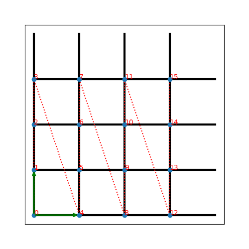

Square¶
full name: tenpy.models.lattice.Square
parent module:
tenpy.models.latticetype: class
-
class
tenpy.models.lattice.Square(Lx, Ly, site, **kwargs)[source]¶ Bases:
tenpy.models.lattice.SimpleLatticeA simple uniform square lattice.
- Parameters
- Lx, Lyint
The length in each direction.
- site
Site The local lattice site. The unit_cell of the
Latticeis just[site].- **kwargs :
Additional keyword arguments given to the
Lattice. [[next_]next_]nearest_neighbors are set accordingly. If order is specified in the form('standard', snake_windingi, priority), the snake_winding and priority should only be specified for the spatial directions. Similarly, positions can be specified as a single vector.
- Attributes
orderDefines an ordering of the lattice sites, thus mapping the lattice to a 1D chain.
Methods
lat2mps_idx(lat_idx)translate lattice indices
(x_0, ..., x_{D-1}, u)to MPS index i.mps2lat_idx(i)translate MPS index i to lattice indices
(x_0, ..., x_{D_1}, u)mps2lat_values(A[, axes, u])same as
Lattice.mps2lat_values(), but ignoreu, setting it to0.mps_idx_fix_u([u])return an index array of MPS indices for which the site within the unit cell is u.
mps_lat_idx_fix_u([u])Similar as
mps_idx_fix_u(), but return also the corresponding lattice indices.Return a list [self.site(i) for i in range(self.N_sites)].
Count the number of nearest neighbors for a site in the bulk.
Count the number of next nearest neighbors for a site in the bulk.
ordering(order)Provide possible orderings of the N lattice sites.
plot_basis(ax, **kwargs)Plot arrows indicating the basis vectors of the lattice
plot_bc_identified(ax[, direction, shift])Mark two sites indified by periodic boundary conditions
plot_coupling(ax[, coupling])Plot lines connecting nearest neighbors of the lattice.
plot_order(ax[, order, textkwargs])Plot a line connecting sites in the specified “order” and text labels enumerating them.
plot_sites(ax[, markers])Plot the sites of the lattice with markers.
position(lat_idx)return ‘space’ position of one or multiple sites.
possible_couplings(u1, u2, dx)Find possible MPS indices for two-site couplings.
possible_multi_couplings(u0, other_us, dx)Generalization of
possible_couplings()to couplings with more than 2 sites.site(i)return
Siteinstance corresponding to an MPS index iSanity check.
-
lat2mps_idx(lat_idx)¶ translate lattice indices
(x_0, ..., x_{D-1}, u)to MPS index i.
-
mps2lat_idx(i)¶ translate MPS index i to lattice indices
(x_0, ..., x_{D_1}, u)
-
mps2lat_values(A, axes=0, u=None)¶ same as
Lattice.mps2lat_values(), but ignoreu, setting it to0.
-
mps_idx_fix_u(u=None)¶ return an index array of MPS indices for which the site within the unit cell is u.
If you have multiple sites in your unit-cell, an onsite operator is in general not defined for all sites. This functions returns an index array of the mps indices which belong to sites given by
self.unit_cell[u].- Parameters
- uNone | int
Selects a site of the unit cell.
None(default) means all sites.
- Returns
- mps_idxarray
MPS indices for which
self.site(i) is self.unit_cell[u]. Ordered ascending.
-
mps_lat_idx_fix_u(u=None)¶ Similar as
mps_idx_fix_u(), but return also the corresponding lattice indices.- Parameters
- uNone | int
Selects a site of the unit cell.
None(default) means all sites.
- Returns
- mps_idxarray
MPS indices i for which
self.site(i) is self.unit_cell[u].- lat_idx2D array
The row j contains the lattice index (without u) corresponding to
mps_idx[j].
-
mps_sites()¶ Return a list [self.site(i) for i in range(self.N_sites)].
This should be used for sites of 1D tensor networks (MPS, MPO,…).
-
number_nearest_neighbors(u=0)¶ Count the number of nearest neighbors for a site in the bulk.
Requires
nearest_neighborsto be set.- Parameters
- uint
Specifies the site in the unit cell.
- Returns
- number_NNint
Number of nearest neighbors of the u-th site in the unit cell in the bulk of the lattice. Note that it might be different at the edges of the lattice for open boundary conditions.
-
number_next_nearest_neighbors(u=0)¶ Count the number of next nearest neighbors for a site in the bulk.
Requires
next_nearest_neighborsto be set.- Parameters
- uint
Specifies the site in the unit cell.
- Returns
- number_NNNint
Number of next nearest neighbors of the u-th site in the unit cell in the bulk of the lattice. Note that it might be different at the edges of the lattice for open boundary conditions.
-
order¶ Defines an ordering of the lattice sites, thus mapping the lattice to a 1D chain.
This order defines how an MPS/MPO winds through the lattice.
-
ordering(order)¶ Provide possible orderings of the N lattice sites.
This function can be overwritten by derived lattices to define additional orderings. The following orders are defined in this method:
order
equivalent priority
equivalent
snake_winding'Cstyle'(0, 1, …, dim-1, dim)
(False, …, False, False)
'default''snake'(0, 1, …, dim-1, dim)
(True, …, True, True)
'snakeCstyle''Fstyle'(dim-1, …, 1, 0, dim)
(False, …, False, False)
'snakeFstyle'(dim-1, …, 1, 0, dim)
(False, …, False, False)
- Parameters
- orderstr |
('standard', snake_winding, priority)|('grouped', groups) Specifies the desired ordering using one of the strings of the above tables. Alternatively, an ordering is specified by a tuple with first entry specifying a function,
'standard'forget_order()and'grouped'forget_order_grouped(), and other arguments in the tuple as specified in the documentation of these functions.
- orderstr |
- Returns
- orderarray, shape (N, D+1), dtype np.intp
the order to be used for
order.
See also
get_order()generates the order from equivalent priority and snake_winding.
get_order_grouped()variant of get_order.
plot_order()visualizes the resulting order.
-
plot_basis(ax, **kwargs)¶ Plot arrows indicating the basis vectors of the lattice
- Parameters
- ax
matplotlib.axes.Axes The axes on which we should plot.
- **kwargs :
Keyword arguments specifying the “arrowprops” of
ax.annotate.
- ax
-
plot_bc_identified(ax, direction=-1, shift=None, **kwargs)¶ Mark two sites indified by periodic boundary conditions
Works only for lattice with a 2-dimensional basis.
- Parameters
- ax
matplotlib.axes.Axes The axes on which we should plot.
- directionint
The direction of the lattice along which we should mark the idenitified sites. If
None, mark it along all directions with periodic boundary conditions.- shiftNone | np.ndarray
The origin starting from where we mark the identified sites. Defaults to the first entry of
unit_cell_positions.- **kwargs :
Keyword arguments for the used
ax.plot.
- ax
-
plot_coupling(ax, coupling=None, **kwargs)¶ Plot lines connecting nearest neighbors of the lattice.
- Parameters
- ax
matplotlib.axes.Axes The axes on which we should plot.
- couplinglist of (u1, u2, dx)
By default (
None), use :attr:nearest_neighbors. Specifies the connections to be plotted; iteating over lattice indices (i0, i1, …), we plot a connection from the site(i0, i1, ..., u1)to the site(i0+dx[0], i1+dx[1], ..., u2), taking into account the boundary conditions.- **kwargs :
Further keyword arguments given to
ax.plot().
- ax
-
plot_order(ax, order=None, textkwargs={}, **kwargs)¶ Plot a line connecting sites in the specified “order” and text labels enumerating them.
- Parameters
- ax
matplotlib.axes.Axes The axes on which we should plot.
- orderNone | 2D array (self.N_sites, self.dim+1)
The order as returned by
ordering(); by default (None) useorder.- textkwargs: ``None`` | dict
If not
None, we add text labels enumerating the sites in the plot. The dictionary can contain keyword arguments forax.text().- **kwargs :
Further keyword arguments given to
ax.plot().
- ax
-
plot_sites(ax, markers=['o', '^', 's', 'p', 'h', 'D'], **kwargs)¶ Plot the sites of the lattice with markers.
- Parameters
- ax
matplotlib.axes.Axes The axes on which we should plot.
- markerslist
List of values for the keywork marker of
ax.plot()to distinguish the different sites in the unit cell, a site u in the unit cell is plotted with a markermarkers[u % len(markers)].- **kwargs :
Further keyword arguments given to
ax.plot().
- ax
-
position(lat_idx)¶ return ‘space’ position of one or multiple sites.
- Parameters
- lat_idxndarray,
(... , dim+1) Lattice indices.
- lat_idxndarray,
- Returns
- posndarray,
(..., dim) The position of the lattice sites specified by lat_idx in real-space.
- posndarray,
-
possible_couplings(u1, u2, dx)¶ Find possible MPS indices for two-site couplings.
For periodic boundary conditions (
bc[a] == False) the indexx_ais taken moduloLs[a]and runs throughrange(Ls[a]). For open boundary conditions,x_ais limited to0 <= x_a < Ls[a]and0 <= x_a+dx[a] < lat.Ls[a].- Parameters
- u1, u2int
Indices within the unit cell; the u1 and u2 of
add_coupling()- dxarray
Length
dim. The translation in terms of basis vectors for the coupling.
- Returns
- mps1, mps2array
For each possible two-site coupling the MPS indices for the u1 and u2. MPS indices for to be connected by the coupling.
- lat_indicesarray, shape = (len(mps1), dim)
Corresponding indices in the lattice. The entries are in the “bottom left corner”.
- coupling_shapetuple of int
Len
dim. The correct shape for an array specifying the coupling strength. lat_indices has only rows within this shape.
-
possible_multi_couplings(u0, other_us, dx)¶ Generalization of
possible_couplings()to couplings with more than 2 sites.
-
site(i)¶ return
Siteinstance corresponding to an MPS index i
-
test_sanity()¶ Sanity check. Raises ValueErrors, if something is wrong.